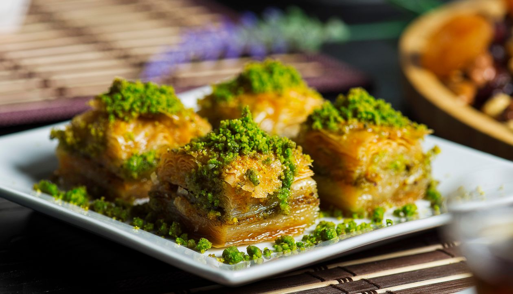
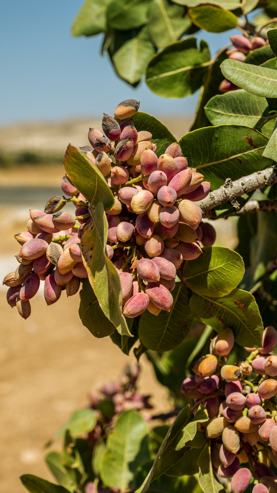
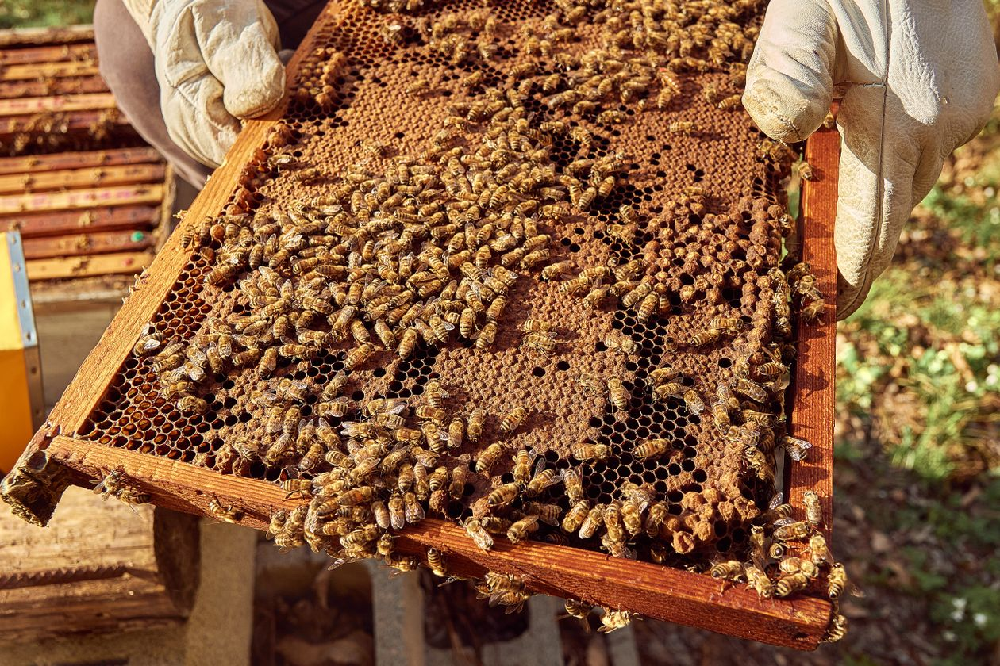

Baklava chef · Festival & celebration baking
Forty layers, two harvests — and both of them are printed.
Every tray in this kitchen stands on two crops Yasmin Haddad does not control: Sicilian pistachios, which bear heavily one year and lightly the next, and Kent honey, which arrives in whatever quantity the season allows. The harvest figures are published below, the tray prices follow them in the open, and the filling weight never changes to hide a bad year.

The two harvests — published figuresThis season: light year · good flow
Pistachios — partner orchard, Sicily
7–11 kg a tree, this light year
120 trees, alternate bearing: 18–24 kg a tree in a heavy year, 7–11 kg in a light one. Kernels run at about half the in-shell weight.
Honey — partner apiary, Kent
20–30 kg a hive, this good flow
40 hives: 20–30 kg a hive in a good flow, 8–14 kg in a poor one — after the bees' winter share is left on the hive.
This week's register
Folio 01 — What is bakingBaked to order on Thursdays, Fridays and Saturdays. Sold out is a normal state for a kitchen this size — it means the batch went, not that the book is closed. Prices are this season's, from the rate card below.
Classic Pistachio Baklava
Light-year batch · Sicilian kernels
Tray of 24 pieces · 300 g of pistachio filling in every tray, heavy year or light · syrup of 120 g honey + 180 g sugar
£44per tray · this season
AvailableHoney & Walnut Baklava
Good-flow honey · Kent apiary
Tray of 24 pieces · 280 g walnut filling · the honey leads the syrup — 200 g honey + 150 g sugar
£30per tray · this season
AvailablePistachio–Honey Celebration Box
Both harvests · gift tin
Box of 12 pieces — 6 pistachio, 6 walnut · boxed the day it is baked · the Eid book takes these first
£29per box · this season
AvailablePistachio Praline Baklava
New line · five test batches
Festival batch of 60 trays · the batch story is told in full on The Work page
£46per tray · festival batch
Sold outSurplus Honey, by the Jar
Apiary surplus only · 2025 flow
340 g jar · moisture-checked at under 20% before jarring · sold only when the apiary has more than the kitchen needs
£7per jar · when there is surplus
Sold outOn the Classic Pistachio — a wholesale standing order
“The light-year letter arrived before the price did: the crop figures, the new tray price, and the filling weight — unchanged — all on one page. We renewed the standing order the same week.”
Priya Shah — owner of a deli in Stoke Newington, buying six trays a week for three seasons
The Harvest & Tray Explorer
Folio 02 — Pick a line, pick a harvestChoose a line, then switch the harvest state. The sheet shows what the season did, what the bake takes, how far the crop stretches, and the price — every figure on the sheet is also printed in Table 1 or the rate card on this page. Nothing here is a live quote; it is the kitchen book, opened.
| Source | Standing | Heavy year / good flow | Light year / poor flow | The kitchen takes |
|---|---|---|---|---|
| Pistachios — partner orchard, Sicily | 120 trees | 18–24 kg in-shell a tree → 1,080–1,440 kg kernels | 7–11 kg in-shell a tree → 420–660 kg kernels | 300 g kernels a classic tray |
| Honey — partner apiary, Kent | 40 hives | 20–30 kg a hive → 800–1,200 kg | 8–14 kg a hive → 320–560 kg | 120–200 g a tray, by line |
Kernels run at about half the in-shell weight. Honey figures are the take after the bees' winter share is left on the hive. Both harvests are ranges because both are weather — a single exact figure would be a lie in print.
- The season
- The bake
- The harvest
- Keeping
- Price


The rate card
Folio 03 — Prices, both seasons| Line | Other season | This season | Wholesale |
|---|---|---|---|
| Classic Pistachio — tray of 24 | £38 · heavy year | £44 · light year this season | −20% standing order |
| Honey & Walnut — tray of 24 | £34 · poor flow | £30 · good flow this season | −20% standing order |
| Celebration Box — 12 pieces | £26 · heavy year | £29 · light year this season | −10% on 20+ boxes |
| Pistachio Praline — tray of 24 | £46 · festival batch | Sold out | — |
| Surplus Honey — 340 g jar | £7 · when there is surplus | None this season | — |
Wholesale standing orders: six trays a week or more, priced at 20% under the season's rate-card price, with the season's price agreed in writing before the season starts. Festival bookings: 25% deposit, balance on collection.
The ledger calculator
Folio 04 — Do the sums yourselfTwo sums, both run on the printed figures. The harvest estimate shows why this kitchen quotes ranges, not points — change the count and the season, and watch the honest answer stay a range. The order total uses this season's rate card, deposit included.
Harvest estimate
Per-unit yields from Table 1. The answer is a range because the harvest is a range.
Order total — this season
Rate-card prices for the current season: light pistachio year, good honey flow.